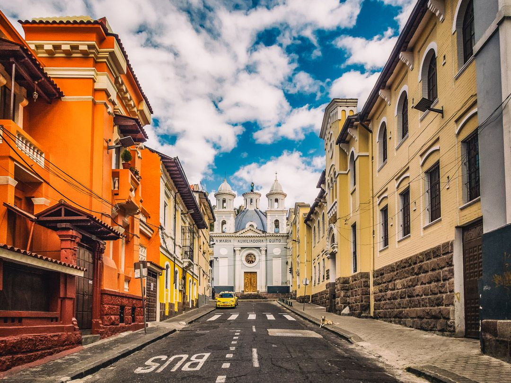
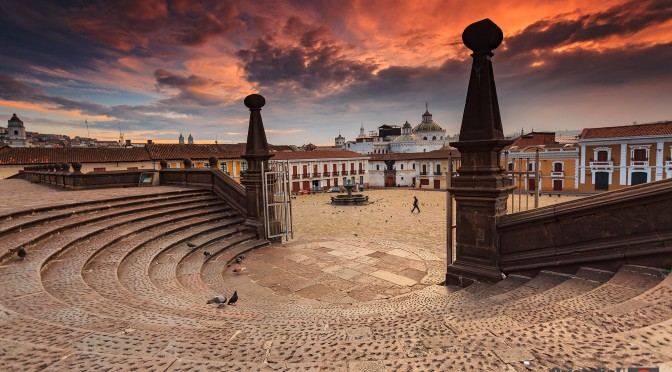

Lo mejor del centro Historico de Quito
Quito es la capital más antigua de América del Sur. Los orígenes de la ciudad se pierden en las brumas del tiempo. No se sabe con certeza la fecha de su creación. Es por ello que se toma la conquista española de la ciudad en 1534 como su fecha de nacimiento. Ya en el siglo XIX se fundó la república del Ecuador tras separarse de la Gran Colombia y estableciendo Quito como su capital.
Lo mejor del centro Historico de Quito
El centro histórico de Quito es el más grande y mejor conservado de todos los centros históricos de América. Ese fue quizás el principal motivo por el fue la primera ciudad nombrada por la UNESCO patrimonio cultural de la humanidad. Este insigne galardón lo compartió con Cracovia. La UNESCO valoró su “belleza física, sus tradiciones, sus rincones de misticismo y sus leyendas vigentes”.
Lo mejor del centro Historico de Quito
Quito es la capital más alta de América del Sur. Se alza a 2.850 metros de altura. Hay una ciudad más alta todavía que Quito en América del sur: La Paz en Bolivia. Sin embargo, La Paz no es la capital de Bolivia (es Sucre).
Lo mejor del centro Historico de Quito
Se dice que Quito posee la temperatura más agradable del mundo (alrededor de los 20 gradosdurante la mayor parte del año). Se le ha llegado a dar el nombre de “tierra de la eterna primavera”.